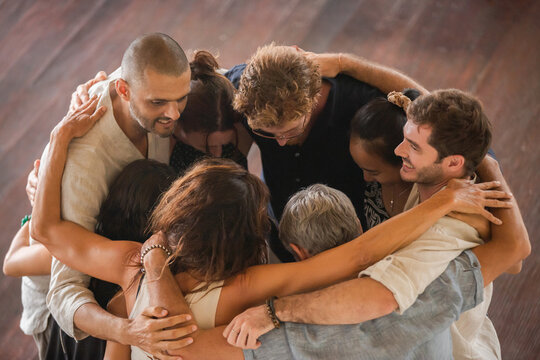

Helping
Discover methods to support and assist victims of child sexual assault
Methods of Support
Supporting victims of child sexual assault requires a multifaceted approach. It is essential to create a safe and nurturing environment where children feel comfortable sharing their experiences and emotions. Providing consistent emotional support and validation can significantly aid in their recovery process.
Therapeutic interventions, such as counseling and therapy, are crucial for helping children process their trauma and develop healthy coping mechanisms. Engaging with trained professionals who specialize in child trauma can make a substantial difference in a child's healing journey.
Community Involvement
Community involvement plays a vital role in supporting victims of child sexual assault. Creating awareness programs and educational workshops can help inform the public about the signs of abuse and the importance of early intervention. Building a network of support within the community can provide a safety net for at-risk children.
Volunteering with local organizations, participating in awareness campaigns, and advocating for policy changes are effective ways to contribute to this cause. By fostering a community that prioritizes the well-being and safety of children, we can collectively work towards preventing abuse and supporting survivors.

Resources for Victims
There are numerous resources available for victims of child sexual assault and their families. These resources include hotlines, support groups, and online platforms that provide information, guidance, and support. Utilizing these resources can offer much-needed assistance and reassurance for both children and their caregivers.
For more information on available resources, please visit our Resources page. Here, you will find a comprehensive list of organizations, hotlines, and online tools designed to support survivors and their families.